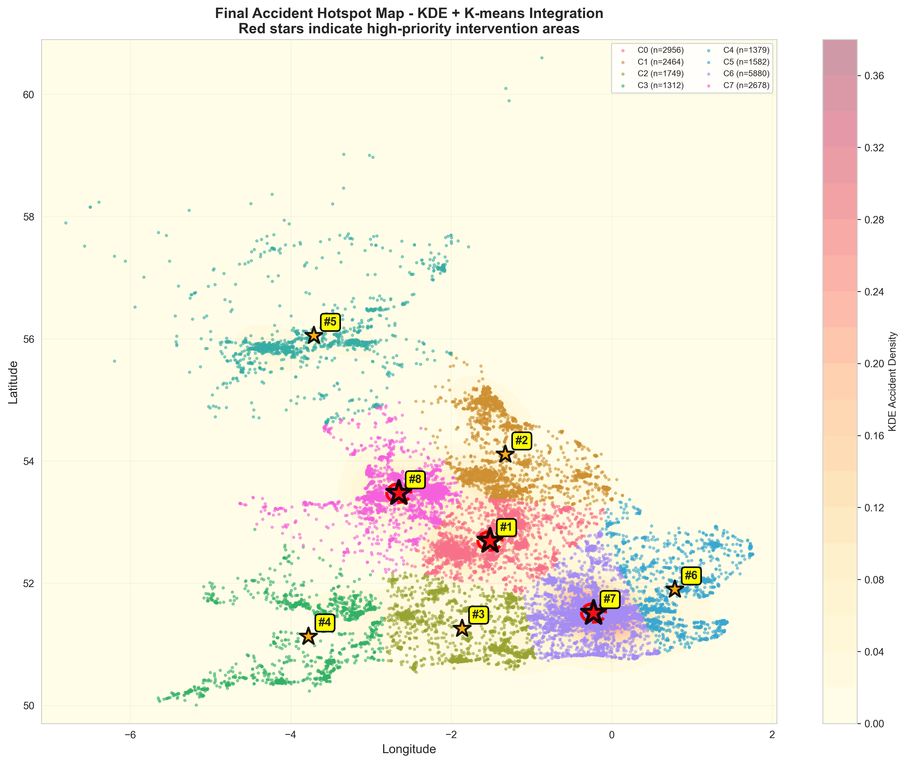

Processing millions of accident records using parallel MapReduce chains on a Dockerized cluster infrastructure.
Dataset processing for millions of records becomes slow and resource-heavy on a single machine. Traditional serial processing cannot handle the volume, and fault tolerance is non-existent if a single node fails.
We need a way to transform raw accident coordinates into geographical "Hotspots" efficiently. Our goal is to calculate a Hotspot Score based on accident severity across a global grid system.
> System ready for MapReduce job submission...
> Docker cluster status: HEALTHY (5 Containers UP)
We architected a Docker-based Hadoop Cluster consisting of a Master (Namenode/ResourceManager) and multiple Workers (Datanode/NodeManager). The implementation uses the Python Hadoop Streaming API to execute distributed logic.
Each worker node reads a chunk of the CSV. It "snaps" individual accident coordinates to a 1.1km x 1.1km grid and assigns severity weights (Fatal: 3, Serious: 2, Slight: 1).
Hadoop automatically redistributes the mapped keys (Grid IDs) so that all data points for the same grid land on the same reducer node.
The reducers sum up the severity weights for each unique Grid ID to produce the final Hotspot Density Score.
# Map to 2-decimal grid
grid_id = f"{round(lat,2)},{round(lon,2)}"
weight = 3 if sev == 'Fatal' else 1
print(f"{grid_id}\t{weight}")# Aggregate by Grid ID
total_weight += int(weight)
# ... after grouping ...
print(f"{current_grid}\t{total_weight}")The final output represents identified high-risk zones. Areas with a higher score indicate regions that are not only accident-prone but specifically prone to fatal incidents.

Visualized using the aggregate scores generated from the Hadoop pipeline.